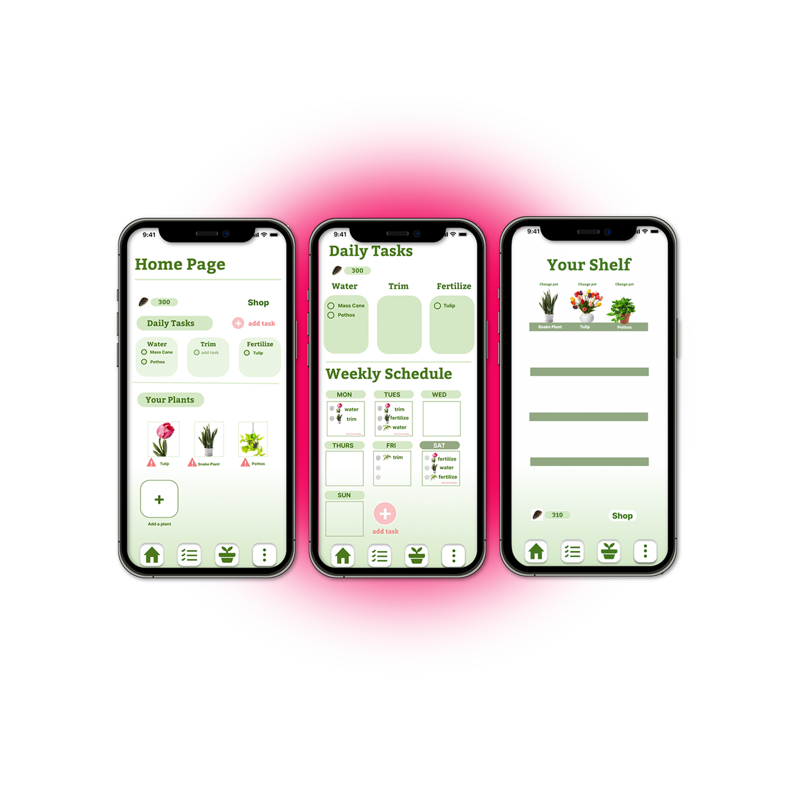
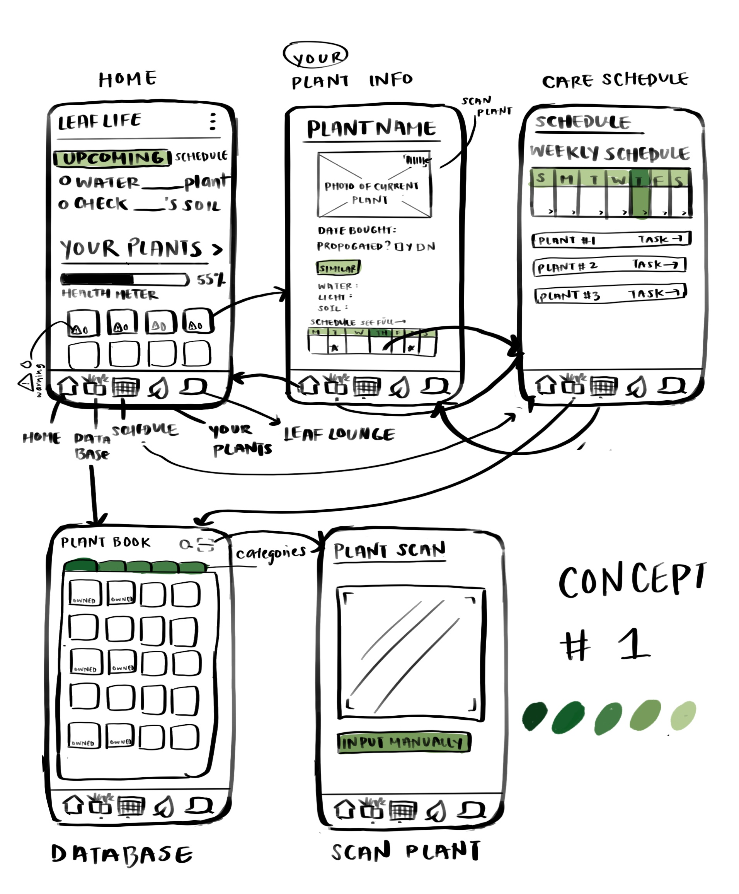
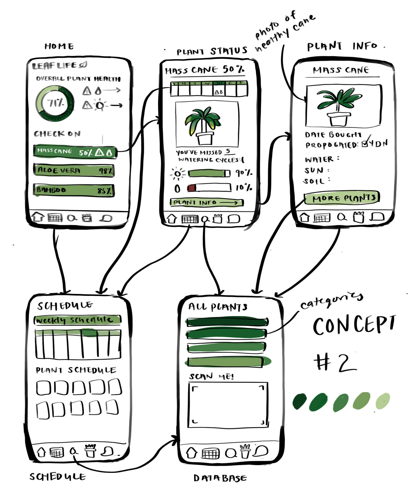
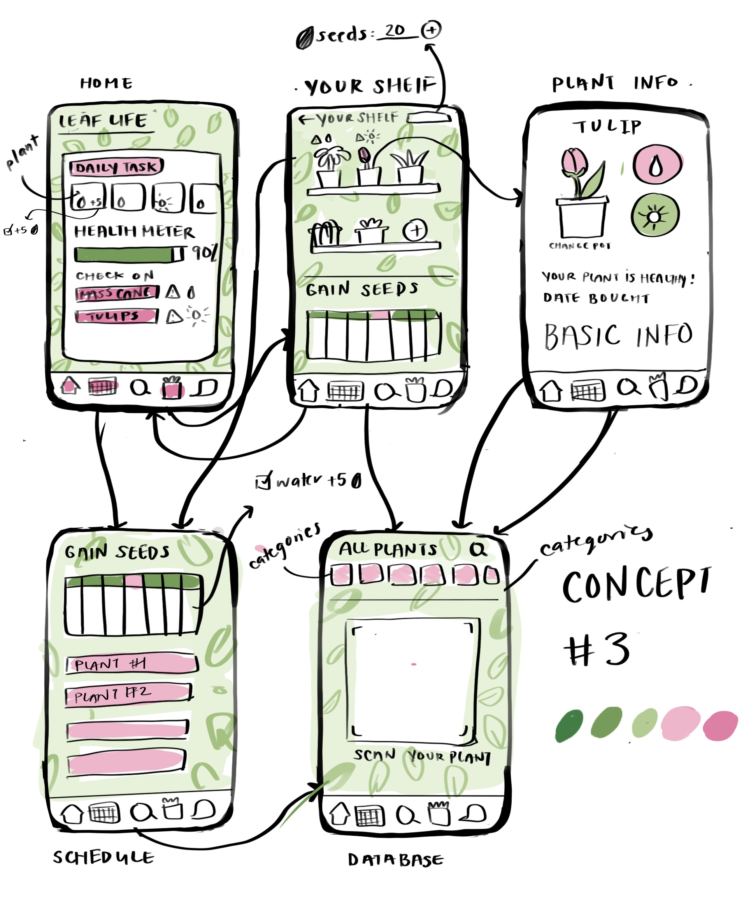
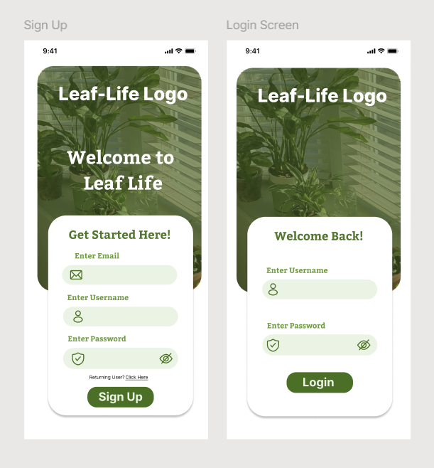
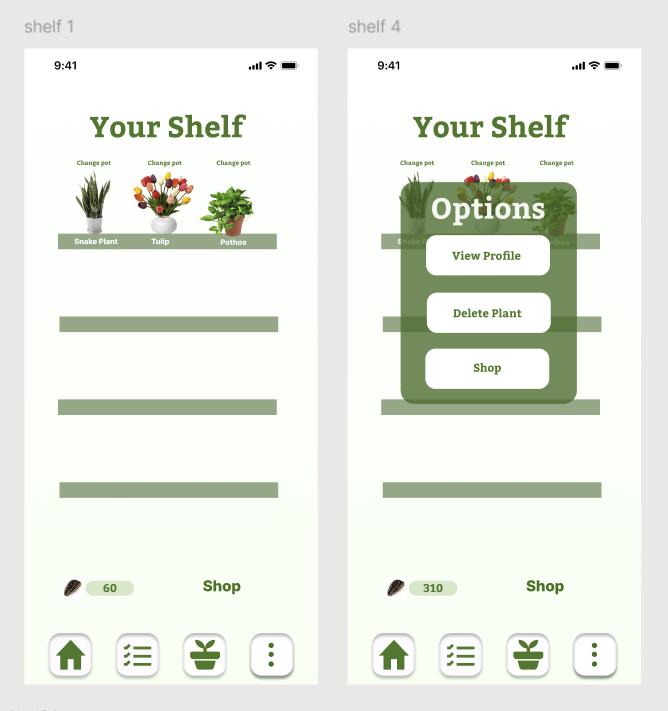
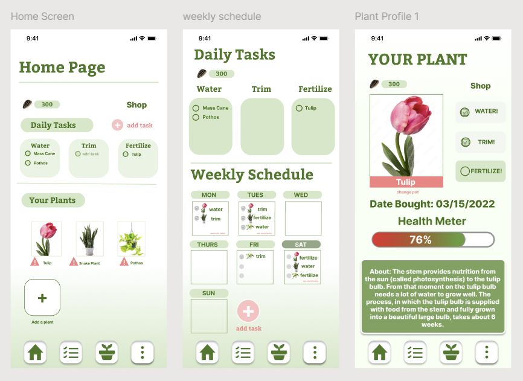

A prototype attempting to make plant parenting easier for busy individuals.
UI Designer · UX Researcher
Skills: User Research, User Testing, Figma, UI Design

Project Context & My Role
This project was completed as part of a collaborative, multi-disciplinary team. I was the
Lead UI
and UX Researcher. I conducted the research strategy, user interviews, analyzing insights, and
making major design decisions through usability testing and iterative evaluation.
Overview
Problem
Despite the known benefits of having houseplants, many people often
struggle to take care of them effectively. This stems from a lack
of knowledge and inconsistent care, leading to neglected and dying plants.
Goals
Assist plant owners with following a watering/ sunlight schedule
Provide information about plant types
Keep plant owners motivated in their plant care journey
Solution
Leaf Life
A gamified plant care app designed to reduce added stress for plant
parents by delivering personalized watering schedules and clear, plant-specific care guidance, while
using
game mechanics to encourage engagement, habit formation, and long-term consistency in plant care.
Key features & UX rationale
Personalized schedules
Users receive plant-specific watering and sunlight reminders based on plant type, reducing
and over/under-watering.
Plant profiles
Each plant has a dedicated profile surfacing care tasks, sunlight needs, and purchase dates to
support informed decision-making.
Gamified motivation
Users recieve with in-app currency and progress indicators through completing tasks, reinforcing good
habit through the "My Shelf" feature. It displays logged plants as in-app visuals with flower pots
that the user can customize through in game currency obtained by completing tasks.
Visual task clarity
Daily checklists help users quickly understand what needs action, minimizing
cognitive load.
Design process
Research → Sketches → Low-fi prototype
Research & insights
Interviews revealed recurring pain points: forgetting, identifying issues, and
need for motivation
Users tend to over/under water their plants, as well as miscalculate the amount
of sunlight each
type of plant needs
Secondary Research
The average plant owner has completely killed 7 houseplants in their lifetime
The number one reason houseplants die is overwatering
60% of people have killed a houseplant within a month of bringing it home
Through three prototype iterations, I experimented with layout and color variations to
identify a direction that best balanced visual appeal with intuitive navigation and user accessibility.



To draw out the sketches, I used Procreate. This would ensure clean and readable
sketches that I could easily share with the team.
In order to create a visual design that aligned with our theme of plants and growth, I
kept the concept colors to earthy natural colors such as green and pink.
Low-Fidelity Prototype
After discussion, our team decided to develop a low fidelity prototype of Concept
Three. We did this because we wanted a prototype of the application that we could use to
out the layout and user interaction before
committing to the final prototype.
We chose Concept Three because we felt as if its playful color scheme best supported
the gamified concept and
helped create a more engaging experience for users.
1. Check a tulip's purchase date to estimate weeks until bloom
2. Buy and equip a new pot for a pothos in the in-app shop
Testing Method
We presented the participants the prototype and gave them a hypothetical context.
"You are a plant parent with a lot of plants, and little time. You downloaded
this app to make plant care simple and to stay motivated.
The participants were given the tasks one at a time and encouraged to think aloud
while navigating the app.
Their actions and thoughts were then observed and noted down.
Usability Test Results
Key Issues
Plant profile discoverability:
Users expected plant profiles to be accessible via navigation; photos on home felt clickable
but
weren't obviously interactive.
Shop navigation:
Users attempted to reach the shop via plant images; shop CTA was small and buried on the
Shelf
screen.
Non-functional affordances:
schedule icon and arrow indicators appeared interactive but were non-functional, causing
confusion.
Heuristic Evaluation Results
Violated Heuristics
Visibility of system status, Aesthetic & minimalist design,
User
control & freedom.
Visibility of system status — Violated: clickable-looking icons did not
function.
Surface the shop in primary navigation or prominent CTA
Clarify and strengthen AR scan CTAs and onboarding
Final Prototype

Initial home screen layout exploration

“Shelf” feature where logged plants are displayed

Refined navigation after usability feedbackPot customization and purchase flow
Final thoughts
LeafLife progressed from a simple plant-tracker concept into a cohesive product
that blends
practical
plant care, motivating gamification, and supportive community features. The user research guided
design
trade-offs to simplify onboarding, improve discoverability, and make habit-forming features more
approachable.
Impact & Next steps
Iterate on navigation and discoverability issues uncovered in usability
testing
Run a larger-scale usability test (n=8–12) to validate changes
Prototype and pilot AR accuracy in real-user environments
Measure retention impact of gamified rewards (seeds → shop purchases)